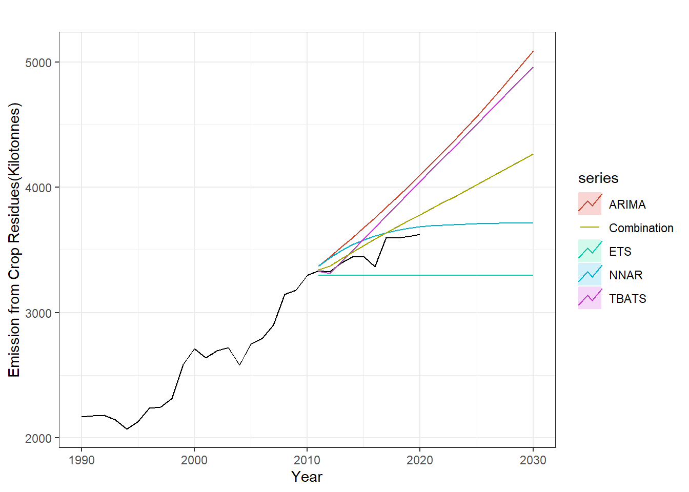

##Load all required libraries
library(tidyverse)
library(readr)
library(gt)
library(tufte)
library(feasts)
library(here)
library(janitor)
library(slider)Crop burning and Air quality in South Asia
Data analysis
Background
In South Asian cities, extreme air pollution during winter is a recurring issue, attributed significantly to crop burning in agricultural lands. Another contributing factor is the reduced wind circulation caused by fog during the winter season, preventing the dispersion of city dust.As part of this project, the focus will be on assessing the strength of the relationships between crop burning and the air quality index in South Asian nations. The analysis will address three key questions:
- Examine the relationships between crop burning and the air quality index, generalized for all of South Asia.
- Identify the South Asian country with the highest incidence of crop burning and assess its contribution to air quality.
- Utilize forecasting techniques to predict the trajectory of the identified country in the coming years.
Setup
The initial chunk of the project involves loading all the required libraries, with subsequent chunks introducing specific libraries as needed, providing clarity on the functions used from each package.
Data collection and wrangling
The required data are downloaded from World bank data catalogue, Kaggle website, and ClimateWatch. The datasets are cleaned based on requirement using stringR package, dplyr, and tidyverse. In the first part, the emission data from the kaggle is cleaned and joined with air quality data from worldbank. The data are summarized in yearly basis, ranging from 1990 to 2020. The detailed data analysis is shown in the code chunks.
##read the data and clean the name
data_world_bank <- read_csv(here("posts", "southAsia_crop","data",
"Agrofood_co2_emission.csv"),
show_col_types = FALSE) %>%
janitor::clean_names()
#filter data for south asia
south_asian_countries <- c("Nepal", "India", "Bangladesh", "Sri Lanka", "Pakistan",
"Afghanistan", "Maldives")
#just filter for south asian region
south_asian_data <- data_world_bank %>%
filter(area %in% c(south_asian_countries)) %>%
mutate(year = as.numeric(year))##read the data and transpose it to form a database
aqi_world_bank1 <- read_csv(here("posts", "southAsia_crop","data", "aqi.csv")) %>%
clean_names() %>%
t()
##Perform data cleaning
aqi_world_bank <- data.frame(cbind(year1 = rownames(aqi_world_bank1),
aqi_world_bank1)) %>%
mutate(year = as.numeric(sub(".*yr(\\d{4}).*", "\\1", year1)))
##filter only those rows where column is not equal to NA
aqi_world_bank <- aqi_world_bank %>%
filter(!is.na(year))
##select only required columns and rename bad-columns
aqi_world_bank <- aqi_world_bank %>%
select(year = year, 'aqi_value' = 'V2') %>%
rownames_to_column(var = "RowID") %>% #drop the index, not required
select(-RowID)
##arrange the data based on numeric columns
aqi_world_bank <- aqi_world_bank %>%
arrange(year) %>%
mutate(year = as.numeric(year))##filter columns from the first dataset
SA_reduced_columns <- south_asian_data %>%
select(area, year, crop_residues, average_temperature_c)
##group by year and summarize for all countries
SA_summarized <- SA_reduced_columns %>%
group_by(year) %>%
summarize(crop_residues = sum(crop_residues),
temp_average = mean(average_temperature_c))
##left join with aqi world bank
SA_emission <- left_join(SA_summarized, aqi_world_bank, by = "year") %>%
mutate(aqi_value = as.numeric(aqi_value))Data Exploration
Visualizations have been generated for the cleaned data as part of the exploratory phase, aimed at observing the general trends and characteristics within the dataframe. This preliminary exploration is valuable for subsequent analyses, helping to identify patterns, missing data, and errors. The graph presented below illustrates the long-term trend of crop emissions in South Asian countries. A notable and robust increasing trend in crop burning is evident from the graph, indicating a substantial rise in emissions over the depicted period.
# perform exploratory data analysis
ggplot(SA_emission, aes(x = year, crop_residues)) +
geom_line (stat = "identity", fill = "skyblue", color = "black") +
labs(title = "Emission from Crop Residues burning in South Asian Countries",
x = "Year",
y = "Emission (kilotonnes)") +
theme_minimal()
Likewise, the presented graph depicts the trend in the Air Quality Index values across South Asian nations. At a 1-unit interval on the x-axis scale, the graph might initially resemble white noise, though underlying trends may exist. This is where the utility of moving averages becomes apparent. Employing a 10-year moving average has been instrumental in reconstructing this graph, revealing a discernible upward trend in air quality values over time.
# include temperature with aqi index, adding interaction between crop residues
x <- ggplot(SA_emission, aes(year, aqi_value)) +
geom_line() +
labs(title = "Before",
x = "Year",
y = "AQI value") +
ylim(c(0, 10))+
theme_minimal()+
geom_smooth(method = "lm", se = F, col = 'red', size = 0.3)
y <- SA_emission %>%
mutate(aqi_avearge = slide_dbl(aqi_value, mean, .before = 5,
.complete = TRUE)) %>%
ggplot(aes(year, aqi_avearge)) +
geom_line() +
labs(title = "After transformation",
x = "Year",
y = "AQI value") +
theme_minimal()+
xlim(1990, 2019)+
geom_smooth(method = "lm", se = F, col = 'red', size = 0.3)
# Displaying Plots Side by Side
gridExtra::grid.arrange(x, y, nrow = 2)
Data Transformation
The data exploration phase has provided valuable insights, prompting the next step in the analysis—data transformation. In this phase, mathematical transformations will be applied to the data to ensure adherence to the assumptions of the intended model. Given the plan to utilize a linear regression model, establishing a robust association between the predictor variable (crop emission) and the response variable (Air Quality Index) is crucial. As part of this transformation, the predictor variable has been subjected to a rolling average, a method aimed at enhancing the correlation between the variables and facilitating the fitting of the linear regression model.
#correlation between these two plots, when no transformation
cor(SA_emission$aqi_value, SA_emission$crop_residues)
## [1] -0.1064666#Try transforming data, or smoother the data to detect the pattern
library(slider)
SA_emission <- SA_emission %>%
mutate(aqi_avearge = slide_dbl(aqi_value, mean, .before = 5,
.complete = TRUE))
cor(SA_emission$aqi_avearge, SA_emission$crop_residues, use = "na.or.complete")
## [1] 0.4571707Fitting a Linear Model
The data is ready, I propose a statistical hypothesis for my linear regression model: - null hypothesis: no change in aqi value with crop residues - alternate hypothesis: change in aqi value with crop residues
MODEL = lm(data = SA_emission, aqi_avearge ~ crop_residues)
summary(MODEL)
Call:
lm(formula = aqi_avearge ~ crop_residues, data = SA_emission)
Residuals:
Min 1Q Median 3Q Max
-1.95601 -0.28344 0.05615 0.32891 0.83340
Coefficients:
Estimate Std. Error t value Pr(>|t|)
(Intercept) 3.523e+00 9.750e-01 3.613 0.00139 **
crop_residues 9.431e-05 3.745e-05 2.518 0.01887 *
---
Signif. codes: 0 '***' 0.001 '**' 0.01 '*' 0.05 '.' 0.1 ' ' 1
Residual standard error: 0.5856 on 24 degrees of freedom
(5 observations deleted due to missingness)
Multiple R-squared: 0.209, Adjusted R-squared: 0.176
F-statistic: 6.342 on 1 and 24 DF, p-value: 0.01887According to the model’s findings, there is a statistically significant correlation between the air quality index and crop residues. The output indicates that, For each one-unit increase in the variable (crop_residues), the dependent variable (aqi_avearge) is estimated to increase by 9.431e-05 units, assuming all other factors remain constant. This outcome aligns with expectations, as air quality is directly impacted by the smoke and dust emitted from burning crop residues. The subsequent analysis will focus on identifying the country with the highest emissions.
Part B
In this analysis, I replicated the methodology employed in the initial phase, with a slight alteration in the data transformation process. Instead of utilizing a rolling mean, I opted to normalize the data by the total cultivable area. To elaborate, the graph presented illustrates emissions categorized by country. However, this representation is biased due to the fact that India, with its larger area and population, naturally yields a higher total emission. To address this bias, the emission values were divided by the total cultivable area within each country, resulting in emissions per unit of cultivable area. This approach is more precise and provides a more accurate assessment.
#further data exploration
ggplot(south_asian_data, aes(year, crop_residues, color = area)) +
geom_point() +
facet_grid(cols = vars(area)) +
labs(
x = "Year 1990-2020",
y = "Emission from Crop Burning(kilotonnes)") +
scale_color_discrete(name = "Country") +
theme_bw()+
theme(
# Remove x-axis title
axis.text.x = element_blank() # Remove x-axis labels
)+
scale_x_continuous(breaks = seq(min(south_asian_data$year), max(south_asian_data$year), by = 30)) # Adjust the breaks as needed
# Save the plot
ggsave("explore.png", width = 10, height = 5)Upon normalizing the emissions, the resulting graph reveals a notable shift in findings. Contrary to the initial assumption that India had the highest emissions, the new data indicates that Bangladesh emerges as the country with the highest emissions.
#create a dataframe including values for agricultural land in these countries
total_agri_area <- read_csv(here("posts", "southAsia_crop","data", "area_sa.csv"))
colnames(total_agri_area)
## [1] "Country Name" "Country Code" "Indicator Code" "1960"
## [5] "1961" "1962" "1963" "1964"
## [9] "1965" "1966" "1967" "1968"
## [13] "1969" "1970" "1971" "1972"
## [17] "1973" "1974" "1975" "1976"
## [21] "1977" "1978" "1979" "1980"
## [25] "1981" "1982" "1983" "1984"
## [29] "1985" "1986" "1987" "1988"
## [33] "1989" "1990" "1991" "1992"
## [37] "1993" "1994" "1995" "1996"
## [41] "1997" "1998" "1999" "2000"
## [45] "2001" "2002" "2003" "2004"
## [49] "2005" "2006" "2007" "2008"
## [53] "2009" "2010" "2011" "2012"
## [57] "2013" "2014" "2015" "2016"
## [61] "2017" "2018" "2019" "2020"
## [65] "2021" "2022"
total_agri_area <- total_agri_area %>% select(-c(`Country Code`, `Indicator Code`)) %>% filter(`Country Name` %in% south_asian_countries)
##Pivot longer the data
transposed <- total_agri_area %>% pivot_longer(cols = "1960": "2022") %>%
na.omit() %>%
filter(name >= 1990) %>%
rename("area_cultivable"= "value", "year"= "name", 'area' = 'Country Name') %>%
mutate(year = as.numeric(year))
transposed
## # A tibble: 224 × 3
## area year area_cultivable
## <chr> <dbl> <dbl>
## 1 Afghanistan 1990 380400
## 2 Afghanistan 1991 380300
## 3 Afghanistan 1992 380300
## 4 Afghanistan 1993 379340
## 5 Afghanistan 1994 378130
## 6 Afghanistan 1995 377630
## 7 Afghanistan 1996 377570
## 8 Afghanistan 1997 377950
## 9 Afghanistan 1998 378680
## 10 Afghanistan 1999 377640
## # ℹ 214 more rows# Divide crop residues by total agricultural land
##SA_asian_data has the required ID for the division
normalized_area <- left_join(south_asian_data, transposed, by = c("area", "year"))
normalized_area <- normalized_area %>%
mutate( norm_crop_residue = crop_residues/area_cultivable * 10^6)## now normalize the area
ggplot(normalized_area, aes(year, norm_crop_residue, color = area))+
geom_point()+
facet_grid(cols = vars(area), scales = "free_x")+
theme_bw()+
theme(axis.text.x = element_blank())+
scale_color_discrete(name = "Country") +
labs(
x = "Year 1990-2020",
y = "Emission from Crop Burning per cultivable area (kilotonnes)"
) +
theme(
# Remove x-axis title
axis.text.x = element_blank() # Remove x-axis labels
)+
scale_x_continuous(breaks = seq(min(south_asian_data$year), max(south_asian_data$year), by = 30)) # Adjust the breaks as needed
# Save the plot
ggsave("explore2.png", width = 10, height = 5)The subsequent phase of my analysis is centered on Bangladesh, given its distinction as the country with the highest emissions per cultivable land. In this context, I applied a linear regression model to assess the strength of the relationship between crop residues and air quality. Bangladesh stands out as having the highest emissions from crop residues in the South Asian region. The objective is to quantify the robustness of the correlation between crop residues and air quality in this particular context.
# work for bangladesh
data <- c(52.90993831, 51.64362616,
53.74695817, 55.06194439, 56.41649854, 60.5358739, 68.94271136, 66.42738113, 73.27082296, 68.97033719, 67.7673598, 62.75318316, 63.27546257)
# Duplicate the first two values four times each
data <- c(rep(data[1:5], each = 4), data[3:length(data)])
# Create a data frame with a single column
Bangladesh <- data.frame(aqi_value = data)#combine this with SA Data for Bangladesh only
bangladesh_filtered <- normalized_area %>%
filter(area == "Bangladesh") %>%
cbind(Bangladesh)##test the model here
#| code-fold: false
model_bangladesh <- lm(data = bangladesh_filtered, aqi_value ~ crop_residues)
summary(model_bangladesh)
Call:
lm(formula = aqi_value ~ crop_residues, data = bangladesh_filtered)
Residuals:
Min 1Q Median 3Q Max
-7.502 -1.442 -0.367 1.563 11.405
Coefficients:
Estimate Std. Error t value Pr(>|t|)
(Intercept) 32.049523 3.708684 8.642 1.62e-09 ***
crop_residues 0.008853 0.001278 6.925 1.31e-07 ***
---
Signif. codes: 0 '***' 0.001 '**' 0.01 '*' 0.05 '.' 0.1 ' ' 1
Residual standard error: 3.768 on 29 degrees of freedom
Multiple R-squared: 0.6231, Adjusted R-squared: 0.6101
F-statistic: 47.95 on 1 and 29 DF, p-value: 1.307e-07As per the model output, a 1-unit increase in the crop residues in Bangladesh Air Quality Index is associated with a 0.008-ton rise in AQI. The model’s Residual Square value stands at approximately 62%. The significance of the p-values, all below 5%, and the residual squared error value of 61% suggest that the model has performed well with the chosen variables.
Further Exploration
Up to this juncture, the analysis has been based on annual average data. The next step involves a shift to a more detailed exploration using monthly time series to uncover the nuanced trends in air quality in Bangladesh. This process includes decomposing the time series and employing various forecasting models to determine the most suitable model for the dataset.
##read all year data and combine them using list methods
files_list <- list.files(here("posts", "southAsia_crop", "data"),
pattern = "^Dhaka.*\\.csv$")
daily_aqi <- data.frame()
# Loop through each file name and read the data
for (file in files_list) {
file_path <- here::here("posts", "southAsia_crop", "data", file) # Adjust the path accordingly
x <- readr::read_csv(file_path)
daily_aqi <- dplyr::bind_rows(daily_aqi, x)
}
##filter where all air quality index values are -999
daily_aqi_filtered <- daily_aqi %>%
filter(!AQI == -999)Conducting a time-series analysis on a daily basis may not yield meaningful insights, given that crop burning is typically influenced by monthly patterns rather than daily occurrences. For instance, villagers might engage in burning crop residues on days with less wind, and with numerous villagers participating, these activities may take place on different days. Unfortunately, the unavailability of online sources providing monthly data on crop emissions has led us to focus on plotting a time series for monthly air quality. This approach aims to capture the broader trends associated with air quality fluctuations in the absence of specific monthly data on crop emissions.
##load feasts package, these contains mostly time series functions
library(feasts)
library(tsibble)
library(forecast)
##change date format
daily_aqi_filtered <- daily_aqi_filtered %>%
mutate(date_column = as.Date(daily_aqi_filtered$`Date (LT)`,
format = "%m/%d/%Y %H:%M")) %>%
na.omit()plot(daily_aqi_filtered$AQI, xlab = "Year 2016 - 2022", ylab = "AQI value", main = NA)
# Aggregate by month
monthly_aggregated <- daily_aqi_filtered %>%
mutate(month = month(date_column),
year = year(date_column)) %>%
group_by(year, month) %>%
summarize(aqi_sum = mean(AQI)) %>%
mutate(date_column = make_date(year, month))
##convert this to tsibble
df <- monthly_aggregated %>%
mutate(date = yearmonth(date_column))
df <- as_tsibble(df, index = date)
df <- df[c('date', 'aqi_sum')]df %>%
stl(t.window = 13, s.window = "periodic", robust = TRUE) %>%
autoplot() +
ggtitle("") +
labs(x = "Time", y = "Value") +
theme_minimal() +
theme(plot.title = element_text(size = 16, face = "bold"),
axis.title = element_text(size = 14),
axis.text = element_text(size = 12),
legend.title = element_blank(),
legend.text = element_text(size = 12))
Contrary to my initial expectations, the time series analysis revealed the presence of seasonality, a factor I had not anticipated based on my prior knowledge. Upon decomposing the data and examining the graph, it became apparent that seasonality does exist, albeit with a relatively modest impact. This insight is discerned from the small bar displayed to the right of each graph, indicating the extent of contribution from the seasonality component to the overall data.
Forecasting
The given R codes in chunks below are for predicting air quality index in Bangladesh over the next five years using four different models: Exponential Smoothing State Space Models (ETS), AutoRegressive Integrated Moving Average (ARIMA), Nonlinear AutoRegressive Neural Network (NNAR), and Trigonometric seasonality, Box-Cox transformation, ARMA errors, Trend and Seasonal components (TBATS). The data for training goes up to the year 2010, and forecasts are made for 20 time points (5 years). The individual predictions from each model are combined by averaging them, creating a combined forecast. This combined forecast, along with the original data and predictions from each individual model, is then presented graphically using the autoplot function. The aim is to evaluate how well these models perform and if combining them improves the accuracy of predictions.
##preapre train model and fit the forecasting model
Bangladesh_crop <- ts(bangladesh_filtered$crop_residues, start=1990, frequency=1)
train <- window(Bangladesh_crop, end=2010)
h <- 20 # Forecasting for the next 5 years (12 months per year)
ETS <- forecast(ets(train), h=h)
ARIMA <- forecast(auto.arima(train, lambda=0, biasadj=TRUE), h=h)
NNAR <- forecast(nnetar(train), h=h)
TBATS <- forecast(tbats(train, biasadj=TRUE), h=h)
# Combine forecasts for the next 5 years
Combination <- (ETS[["mean"]] + ARIMA[["mean"]] +
NNAR[["mean"]] + TBATS[["mean"]]) / 4 autoplot(Bangladesh_crop) +
autolayer(ETS, series="ETS", PI=FALSE) +
autolayer(ARIMA, series="ARIMA", PI=FALSE) +
autolayer(NNAR, series="NNAR", PI=FALSE) +
autolayer(TBATS, series="TBATS", PI=FALSE) +
autolayer(Combination, series="Combination") +
xlab("Year") + ylab("Emission from Crop Residues(Kilotonnes)")+
theme_bw()
According to the model, the yellow line demonstrates the closest fit to the actual trend. This yellow line represents a combination model, and its predictions can be extrapolated for the year 2030. As per this output, it is anticipated that Bangladesh’s emissions will surpass 4000 tons by the year 2030.
The end to end code for this project can be found at :Github link
Next Steps
- Valuate the accuracy of each individual model employed in the combination.
- Gather monthly data specifically for crop emissions to investigate whether winter months contribute significantly to the Air Quality Index (AQI) in South Asia.
- Leverage World Bank data, which includes emissions for all countries worldwide, to implement clustering techniques for identifying groups of countries emitting similar amounts of CO2.